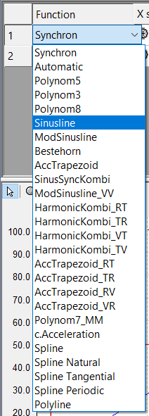

Cam 設定手順
前提
TE1510 : Cam Design Tool Cam のデータを保存する場合に使用する。
Cam の導入
NC Task を追加する

MOTION > Add New Item...を選択する。

目的の NCTask を作成する。
Axis を追加する

Axes > Add New Item...を選択する。

Master と Slave 用に 2 軸 Continuous Axis を追加する。
Master を追加する

Tables > Add New Item...を選択する。

Motion Diagram で Master を追加する。
Slave を追加する

Master > Add New Item...を選択する。

Slave を追加する。
Cam の作成
Motion の作成

Slave を選択します。

上がポイントの情報画面(上部)
下がプロファイル画面(下部)


Insert Point を選択します。

下部にポイントを作る。

ポイントができると上部にポイントのデータが自動生成されます。

ポイントを 2 つ追加する。

上部のデータも自動追加されます。
グラフの形状を変える

上部の Fuction でグラフの形状を変更できます。

Function に合わせてグラフが変化します。